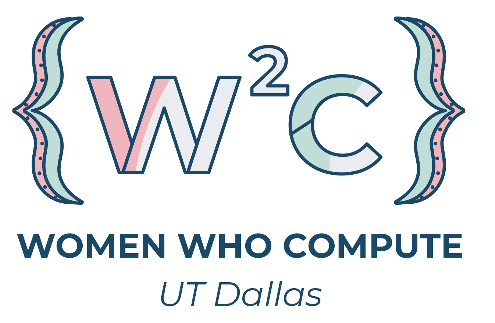

2020-2021 is Ladies in Tech’s inaugural year and is co-founded by Women Who Compute and the Society of Women Engineers. 
This mentorship program will be between one 1st+ year and one 1st year woman engineer UTD student for last one academic year. Our mission is to connect women within engineering at UTD and help students feel connected to the university, their major, and other women engineers. We will be planning workshops and events that will develop students professionally, socially, and mentally: we want happy, healthy, successful engineering students who know their dream job and how to go get it!
Events
Ladies in Tech will be having regular workshops/socials for our mentors/mentee pairs the first week of every month. Topics will be on professional development and personal growth. Currently only date listed is the Mentor Applicationdeadline.
Studying to become an engineer is tough enough without the added struggle of being a woman in a traditionally male-dominated industry. As a UTD student, you learn a lot quickly, and our mentors are shockful of valuable learned lessons. They are eager to share their experiences with incoming freshmen, helping them persevere through the hardships and find a way to achieve their goals. We hope that mentors will be able to develop solid friendships with their mentees, gain confidence in themselves, and grow as leaders.
Requirements to be a Mentor:
must be a second year or above
required to have a minimum 3.0 GPA
willing to help new students feel connected to the university, their major, and other women engineers and computer scientists
Mentees
Mentee applications will be available in early August 2020.
Our mentees are incoming freshmen and/or first-year college students.
Follow our Instagram for regular updates and more information
Contact
Ladies in Tech has Social Media!
Co-Directors of Ladies in Tech Mentoring Program
Hansika Sundaresan
Computer Science // Email: hms180008@utdallas.edu Mail
Michaela Perez Computer Engineering // Email: mip170030@utdallas.edu Mail
Follow Women Who Compute and the Society of Women Engineers on social media: